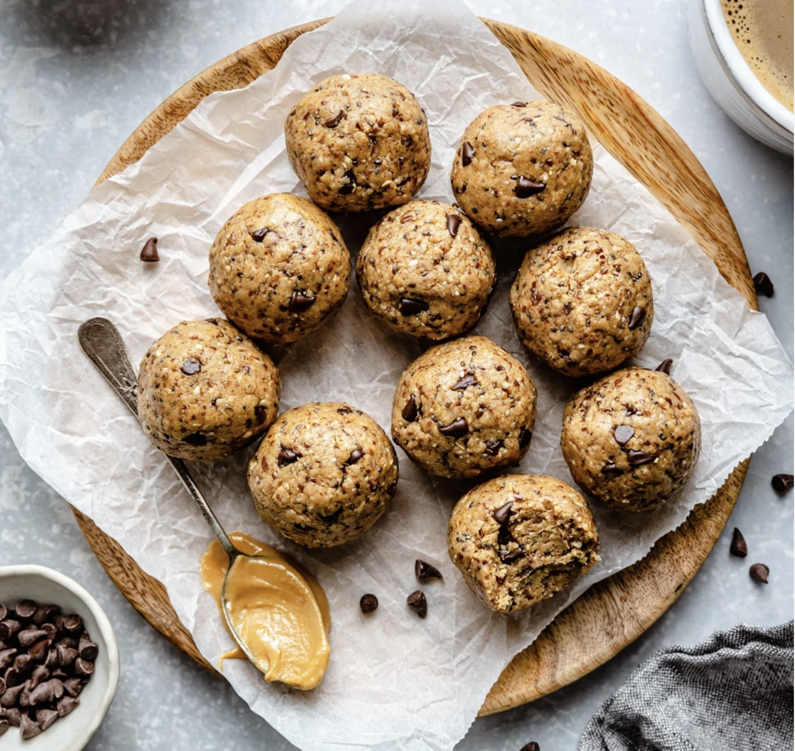

Peanut Butter Bites

5-Minute Protein Peanut Butter Energy Bites
These energy bites are a quick and easy recipe that you can create in 5 minutes or less. These bites also store well in the fridge so you can enjoy throughout the week.
Ingredients
- 1/2 cup natural peanut butter
- 1/4 cup honey
- 1 teaspoon vanilla extract
- 1/3 cup protein powder of choice
- 1/3 cup flaxseed meal
- 1/2 cup rolled oats (gluten free)
- 1 tablespoon chia seeds
- 1/2 teaspoon cinnamon
- 1 tablespoon mini chocolate chips (vegan if desired)
- 1/4 cup unsweetened shredded coconut
Steps
- In the bowl of a food processor, add in the peanut butter, honey, vanilla, protein powder, flaxseed meal, oats, cinnamon, and chia seeds. Pulse together until well combined. Add in chocolate chips and pulse a few more times.
- Use a medium cookie scoop to grab dough and roll into 10 balls. Place them in an airtight container.
- To make without a food processor: add wet ingredients to a medium bowl, mix to combine. Add in dry ingredients and mix together until combined.
- Store in the fridge for up to 1 week, or the freezer for 2 months.
- Enjoy!
Return To Home